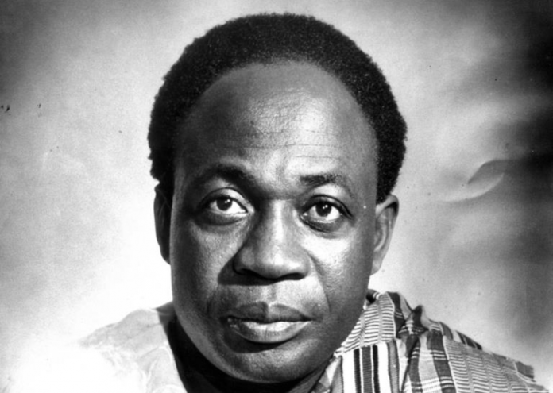

Dr. Kwame Nkrumah (1909 - 1972)
First Blackman to attain independence from the colonial British

Ghana's first prime minister and president Dr. Kwame Nkrumah
Time Lines of Ghana's political journey under Kwame-Nkrumah:
- 1909 - Born Nkroful, Gold Coast.
- 1926-1930 A son of a goldsmith attended mission schools at Accra and government training collegs at Achimota. He was prepared to be a teacher.
- 1935-1943 Leaves his family to travel to the United States to attend Lincoln University and University of Pennsylvania.
- 1943 - He earned multiple bachelor's and master's degree in economics, sociology, education, education, theology and philosophy.
- 1945 - He departed to London, England, to study as a PhD student at the London School of Economics. He co-founded the Pan African Congress, which became an influential voice against colonialism in Africa.
- 1947 - Returned to Gold Coast and became general secretary of the newly-founded United Gold Coast Convention.
- 1949 - Nkrumah split with the organization over its political objectives and formed the Convention People's Party(CPP).
- 1950 - Imprisoned by the British because of his political activities.
- 1951 - Nkrumah was released in 1951 when his party won the general election in a landslide victory.
- 1952 - He subsequently was elected prime minister.
- 1957 - Nkrumah led an aggressive campaign for independence and achieved.
- 1963 - Nkrumah and other African leaders formed the Organization of African Unity.
- 1961 - A firestorm of protest erupted after he appointed himself supreme commander of the armed forces and absolute head of the CPP. Nkrumah subsequently outlawed all other political parties.
- 1966 - Nkrumah’s government was overthrown by a coup d’état while he was on a trip to Beijing, China. Taking refuge in Guinea, Nkrumah spent the rest of his life in exile.
- 1972 - He died in Bucharest, Romania on April 27, 1972.
I am not African because I was born in Africa but because Africa was born in me.
-- Kwame Nkrumah
For more information about the first prime minister of Ghana Dr. Kwame Nkrumah visit Black past page.